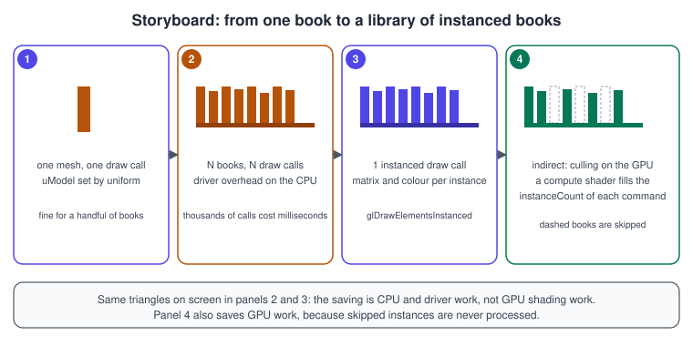
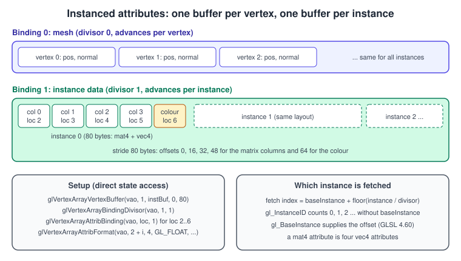
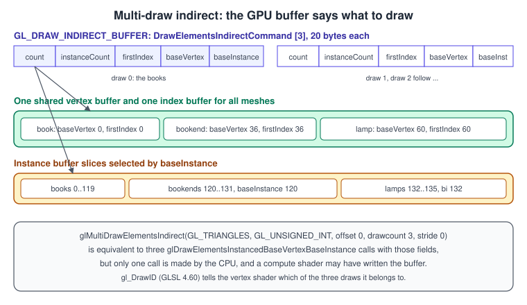

Instancing and Indirect Drawing
|
This content was generated with the assistance of AI and should be verified against the official documentation before being relied on in production. |
A bookshelf has hundreds of books and a library has thousands, but they are all the same few meshes drawn at different places. Issuing one draw call per book makes the CPU and the driver the bottleneck long before the GPU is busy. Instancing draws one mesh many times in a single call, with per-instance data (a transform, a colour, a texture layer) read from a buffer. Indirect drawing goes one step further: the draw parameters themselves are stored in a buffer, so a single call can issue many different draws, and a compute shader on the GPU can decide what gets drawn. This page explains both, with a complete program that draws 136 objects of three kinds in one multi-draw call.
The facts were checked in November 2026. The versions documented are OpenGL 4.6 core (GLSL 4.60) and, where it differs, OpenGL ES
3.2 (GLSL ES 3.20). Instanced drawing is core since OpenGL 3.1 and ES 3.0; glDrawElementsInstancedBaseVertexBaseInstance and
indirect drawing are core since OpenGL 4.2 and 4.0; multi-draw indirect since 4.3; gl_DrawID and the indirect draw-count
variants since 4.6. Bindless textures are an extension (GL_ARB_bindless_texture) and are not part of any core version. The code
needs a desktop GPU and driver with OpenGL 4.6 (the earlier calls could be used from 4.5), GLFW, GLM and glad2, as set up in
Getting started on the desktop. The general ideas of batching, draw
calls and GPU-driven rendering are in Performance and Profiling, and the
mesh layout used here is explained in Meshes and Vertex Data.
Instanced drawing

The instanced draw functions repeat the same draw instanceCount times:
| Function | Notes |
|---|---|
|
Core 3.1 and ES 3.0. |
|
Core 3.1 and ES 3.0. The most common call. |
|
Adds |
|
Add |
Inside the vertex shader, gl_InstanceID counts from 0 to instanceCount - 1. It does not include baseInstance. In GLSL 4.60
(and GL_ARB_shader_draw_parameters before it) gl_BaseInstance and gl_BaseVertex give the values passed to the draw call and
gl_DrawID the index of the draw inside a multi-draw. There are two ways for the vertex shader to find its instance’s data.
Per-instance vertex attributes (divisors)
Give the vertex array a second vertex buffer binding and set its divisor to 1. Attributes read from that binding then advance once per instance instead of once per vertex. In general, the instance whose data is fetched is \( \mathrm{ baseInstance } + \lfloor \mathrm{ instance } / \mathrm{ divisor } \rfloor \).

A mat4 attribute is four consecutive vec4 attributes (locations 2, 3, 4 and 5 for a mat4 declared at location 2); each
needs its own format and enable call, and all four use the same binding. A colour or a texture-layer index follows in the next
location.
struct InstanceData {
glm::mat4 model; // offsets 0, 16, 32, 48
glm::vec4 color; // offset 64; w can hold a texture-array layer
}; // sizeof == 80
GLuint instBuf = 0;
glCreateBuffers(1, &instBuf);
glNamedBufferStorage(instBuf, instances.size() * sizeof(InstanceData), instances.data(), 0);
glVertexArrayVertexBuffer(vao, 1, instBuf, 0, sizeof(InstanceData));
glVertexArrayBindingDivisor(vao, 1, 1); // advance once per instance
for (int i = 0; i < 4; ++i) {
glEnableVertexArrayAttrib(vao, 2 + i);
glVertexArrayAttribFormat(vao, 2 + i, 4, GL_FLOAT, GL_FALSE, i * sizeof(glm::vec4));
glVertexArrayAttribBinding(vao, 2 + i, 1);
}
glEnableVertexArrayAttrib(vao, 6);
glVertexArrayAttribFormat(vao, 6, 4, GL_FLOAT, GL_FALSE, offsetof(InstanceData, color));
glVertexArrayAttribBinding(vao, 6, 1);Instance data in a shader storage buffer
Instead of attributes, the shader can index a buffer itself. This needs no VAO setup, has no 16-attribute limit (the minimum
GL_MAX_VERTEX_ATTRIBS is 16 in OpenGL 4.x), allows arbitrary struct layouts, and lets a compute shader write the same buffer
(see Uniforms, UBOs and SSBOs).
#version 460 core
struct InstanceData { mat4 model; vec4 color; };
layout(std430, binding = 0) readonly buffer Instances { InstanceData inst[]; };
layout(location = 0) in vec3 aPos;
layout(location = 1) in vec3 aNormal;
layout(location = 0) uniform mat4 uViewProj;
out vec3 vNormal;
out vec4 vColor;
void main() {
InstanceData d = inst[gl_BaseInstance + gl_InstanceID]; // gl_InstanceID excludes baseInstance
vNormal = mat3(d.model) * aNormal;
vColor = d.color;
gl_Position = uViewProj * d.model * vec4(aPos, 1.0);
}Bind the buffer with glBindBufferBase(GL_SHADER_STORAGE_BUFFER, 0, instBuf). Shader storage buffers are core since OpenGL 4.3
and ES 3.1. A uniform buffer works the same way for small instance counts but is limited in size (the minimum
GL_MAX_UNIFORM_BLOCK_SIZE is 16 KB in OpenGL 4.x and ES 3.0).
Indirect drawing
An indirect draw reads its parameters from a buffer bound to GL_DRAW_INDIRECT_BUFFER instead of taking them as function
arguments. The buffer holds tightly packed structures:
struct DrawElementsIndirectCommand { // 20 bytes, five GLuint fields, defined by OpenGL
GLuint count; // number of indices
GLuint instanceCount; // number of instances
GLuint firstIndex; // first index in the element buffer, in indices (not bytes)
GLint baseVertex; // value added to each index
GLuint baseInstance; // offset of the first instance
};glDrawElementsIndirect(mode, type, offset) issues one such draw, and glMultiDrawElementsIndirect(mode, type, offset,
drawcount, stride) issues drawcount of them from consecutive structures (stride 0 means tightly packed). The multi-draw is
equivalent to the same calls in a loop, with the guarantee that the draws happen in order, but the CPU makes one call, so there is
one set of validation work for all of them. glMultiDrawArraysIndirect is the non-indexed counterpart.

To draw different meshes in one call, put them all in a single vertex buffer and a single index buffer and describe each by its
firstIndex and baseVertex. Different instance counts and per-draw instance ranges come from instanceCount and
baseInstance. Per-draw data other than the instance data (a material id, say) can be looked up with gl_DrawID in an SSBO.
OpenGL 4.6 adds glMultiDrawElementsIndirectCount(mode, type, indirect, drawcount, maxdrawcount, stride), where drawcount is
an offset into a buffer bound to GL_PARAMETER_BUFFER. A compute shader can then write both the commands and the number of
commands, and the CPU never learns how many draws survived culling.
Required limits and traps
-
The
baseInstancefield is honoured by desktop OpenGL 4.2 and later. OpenGL ES 3.1 has indirect drawing but requires the field to be zero, and has no multi-draw: loop overglDrawElementsIndirectwith different offsets. -
Vertex attribute state, element buffer, and shader program must be the same for all draws of one multi-draw call. That is why all meshes of a call must share a vertex format and be stored in the same buffers.
-
firstIndexis counted in indices, whereas theindicesargument of the non-indirect call is a byte offset. -
Writing the command buffer from a compute shader requires a memory barrier before the draw:
glMemoryBarrier(GL_COMMAND_BARRIER_BIT)for the commands andGL_SHADER_STORAGE_BARRIER_BITif the instance data is read from a storage buffer. See Synchronisation, queries and transform feedback.
Complete example: a library of Bookshelf objects
The program builds three meshes (a book box, a triangular bookend and a pyramid-shaped lamp) in one vertex buffer and one index
buffer, then creates 136 instances: 120 books on four shelves, 12 bookends and 4 lamps. Press I to toggle between per-mesh
instanced draws (three glDrawElementsInstancedBaseVertexBaseInstance calls) and one
glMultiDrawElementsIndirect call. Both draw exactly the same picture.
// instancing.cpp - 136 instanced objects drawn directly or with one multi-draw indirect call.
#include <glad/gl.h>
#include <GLFW/glfw3.h>
#include <glm/glm.hpp>
#include <glm/gtc/matrix_transform.hpp>
#include <glm/gtc/type_ptr.hpp>
#include <cmath>
#include <cstddef>
#include <cstdint>
#include <cstdio>
#include <cstdlib>
#include <vector>
namespace {
constexpr const char* kVs = R"(#version 460 core
layout(location = 0) in vec3 aPos;
layout(location = 1) in vec3 aNormal;
layout(location = 2) in mat4 aModel; // occupies locations 2, 3, 4 and 5
layout(location = 6) in vec4 aColor;
layout(location = 0) uniform mat4 uViewProj;
out vec3 vNormal;
out vec4 vColor;
void main() {
vNormal = mat3(transpose(inverse(aModel))) * aNormal; // correct for non-uniform scale
vColor = aColor;
gl_Position = uViewProj * aModel * vec4(aPos, 1.0);
}
)";
constexpr const char* kFs = R"(#version 460 core
in vec3 vNormal;
in vec4 vColor;
layout(location = 0) out vec4 outColor;
void main() {
vec3 n = normalize(vNormal);
float diff = max(dot(n, normalize(vec3(0.4, 0.9, 0.6))), 0.0);
vec3 c = vColor.rgb * (0.2 + 0.8 * diff);
outColor = vec4(pow(c, vec3(1.0 / 2.2)), 1.0);
}
)";
struct Vertex { glm::vec3 pos, normal; };
struct MeshRange { GLuint count, firstIndex; GLint baseVertex; };
struct InstanceData {
glm::mat4 model;
glm::vec4 color;
};
struct DrawElementsIndirectCommand {
GLuint count, instanceCount, firstIndex;
GLint baseVertex;
GLuint baseInstance;
};
// Mesh builder: flat-shaded triangles, local indices 0..n-1 per mesh, appended to shared arrays.
class MeshBuilder {
public:
void tri(glm::vec3 a, glm::vec3 b, glm::vec3 c) {
glm::vec3 n = glm::normalize(glm::cross(b - a, c - a));
for (glm::vec3 p : {a, b, c}) {
indices_.push_back(static_cast<GLuint>(vertices_.size() - start_));
vertices_.push_back({p, n});
}
}
void quad(glm::vec3 a, glm::vec3 b, glm::vec3 c, glm::vec3 d) { tri(a, b, c); tri(a, c, d); }
void begin() { start_ = vertices_.size(); indexStart_ = indices_.size(); }
MeshRange end() {
return {static_cast<GLuint>(indices_.size() - indexStart_), static_cast<GLuint>(indexStart_),
static_cast<GLint>(start_)};
}
const std::vector<Vertex>& vertices() const { return vertices_; }
const std::vector<GLuint>& indices() const { return indices_; }
private:
std::vector<Vertex> vertices_;
std::vector<GLuint> indices_;
size_t start_ = 0, indexStart_ = 0;
};
MeshRange addBox(MeshBuilder& m) {
m.begin();
const glm::vec3 p[8] = {{-.5f, -.5f, -.5f}, {.5f, -.5f, -.5f}, {.5f, .5f, -.5f}, {-.5f, .5f, -.5f},
{-.5f, -.5f, .5f}, {.5f, -.5f, .5f}, {.5f, .5f, .5f}, {-.5f, .5f, .5f}};
m.quad(p[4], p[5], p[6], p[7]); // +z
m.quad(p[1], p[0], p[3], p[2]); // -z
m.quad(p[5], p[1], p[2], p[6]); // +x
m.quad(p[0], p[4], p[7], p[3]); // -x
m.quad(p[3], p[7], p[6], p[2]); // +y
m.quad(p[0], p[1], p[5], p[4]); // -y
return m.end();
}
MeshRange addPrism(MeshBuilder& m) { // triangular bookend
m.begin();
const glm::vec2 s[3] = {{-.5f, -.5f}, {.5f, -.5f}, {0.f, .5f}};
for (int i = 0; i < 3; ++i) {
glm::vec2 a = s[i], b = s[(i + 1) % 3];
m.quad(glm::vec3(a, -.5f), glm::vec3(b, -.5f), glm::vec3(b, .5f), glm::vec3(a, .5f));
}
m.tri(glm::vec3(s[0], .5f), glm::vec3(s[1], .5f), glm::vec3(s[2], .5f));
m.tri(glm::vec3(s[0], -.5f), glm::vec3(s[2], -.5f), glm::vec3(s[1], -.5f));
return m.end();
}
MeshRange addPyramid(MeshBuilder& m) { // lamp shade
m.begin();
const glm::vec3 apex(0, .5f, 0);
const glm::vec3 b[4] = {{-.5f, -.5f, -.5f}, {.5f, -.5f, -.5f}, {.5f, -.5f, .5f}, {-.5f, -.5f, .5f}};
m.quad(b[0], b[1], b[2], b[3]); // base, faces -y
for (int i = 0; i < 4; ++i) m.tri(b[(i + 1) % 4], b[i], apex);
return m.end();
}
void APIENTRY debugCallback(GLenum, GLenum type, GLuint, GLenum severity, GLsizei,
const GLchar* msg, const void*) {
if (severity == GL_DEBUG_SEVERITY_NOTIFICATION) return;
std::fprintf(stderr, "GL %s: %s\n", type == GL_DEBUG_TYPE_ERROR ? "error" : "message", msg);
}
GLuint compile(GLenum type, const char* src) {
GLuint s = glCreateShader(type);
glShaderSource(s, 1, &src, nullptr);
glCompileShader(s);
GLint ok = 0;
glGetShaderiv(s, GL_COMPILE_STATUS, &ok);
if (!ok) {
char log[2048];
glGetShaderInfoLog(s, sizeof log, nullptr, log);
std::fprintf(stderr, "shader error:\n%s\n", log);
std::exit(1);
}
return s;
}
GLuint makeProgram() {
GLuint v = compile(GL_VERTEX_SHADER, kVs), f = compile(GL_FRAGMENT_SHADER, kFs);
GLuint p = glCreateProgram();
glAttachShader(p, v);
glAttachShader(p, f);
glLinkProgram(p);
GLint ok = 0;
glGetProgramiv(p, GL_LINK_STATUS, &ok);
if (!ok) {
char log[2048];
glGetProgramInfoLog(p, sizeof log, nullptr, log);
std::fprintf(stderr, "link error:\n%s\n", log);
std::exit(1);
}
glDeleteShader(v);
glDeleteShader(f);
return p;
}
bool gIndirect = true;
void onKey(GLFWwindow* win, int key, int, int action, int) {
if (action != GLFW_PRESS) return;
if (key == GLFW_KEY_ESCAPE) glfwSetWindowShouldClose(win, GLFW_TRUE);
if (key == GLFW_KEY_I) {
gIndirect = !gIndirect;
glfwSetWindowTitle(win, gIndirect ? "Bookshelf GL: multi-draw indirect" : "Bookshelf GL: instanced draws");
}
}
} // namespace
int main() {
if (!glfwInit()) return 1;
glfwWindowHint(GLFW_CONTEXT_VERSION_MAJOR, 4);
glfwWindowHint(GLFW_CONTEXT_VERSION_MINOR, 6);
glfwWindowHint(GLFW_OPENGL_PROFILE, GLFW_OPENGL_CORE_PROFILE);
glfwWindowHint(GLFW_OPENGL_DEBUG_CONTEXT, GLFW_TRUE);
GLFWwindow* win = glfwCreateWindow(1100, 680, "Bookshelf GL: multi-draw indirect", nullptr, nullptr);
if (!win) { glfwTerminate(); return 1; }
glfwMakeContextCurrent(win);
glfwSwapInterval(1);
glfwSetKeyCallback(win, onKey);
if (!gladLoadGL(glfwGetProcAddress)) { std::fprintf(stderr, "glad failed\n"); return 1; }
glEnable(GL_DEBUG_OUTPUT);
glDebugMessageCallback(debugCallback, nullptr);
// Three meshes in one vertex buffer and one index buffer.
MeshBuilder mb;
const MeshRange meshes[3] = {addBox(mb), addPrism(mb), addPyramid(mb)};
// 120 books (4 shelves x 30), 12 bookends, 4 lamps. Meshes are contiguous in the instance buffer.
const unsigned counts[3] = {120, 12, 4};
std::vector<InstanceData> inst;
unsigned seed = 12345;
auto rnd = [&seed]() { seed = seed * 1664525u + 1013904223u; return float(seed >> 8) / float(1u << 24); };
const glm::vec3 palette[6] = {{.70f, .12f, .14f}, {.12f, .35f, .70f}, {.15f, .55f, .28f},
{.80f, .60f, .15f}, {.50f, .20f, .60f}, {.85f, .85f, .80f}};
for (int row = 0; row < 4; ++row) {
float x = -1.7f;
for (int i = 0; i < 30; ++i) {
float w = 0.07f + 0.05f * rnd(), h = 0.7f + 0.25f * rnd();
glm::mat4 m = glm::translate(glm::mat4(1.0f), glm::vec3(x + w * 0.5f, 1.1f * row + h * 0.5f, 0));
m = glm::scale(m, glm::vec3(w, h, 0.5f));
inst.push_back({m, glm::vec4(palette[int(rnd() * 5.99f)], 1.0f)});
x += w + 0.01f;
}
}
for (int i = 0; i < 12; ++i) { // bookends at both ends of each shelf, plus a middle one
int row = i / 3;
float x = (i % 3 == 0) ? -1.85f : (i % 3 == 1) ? 1.85f : 0.0f;
glm::mat4 m = glm::translate(glm::mat4(1.0f), glm::vec3(x, 1.1f * row + 0.25f, 0));
m = glm::scale(m, glm::vec3(0.15f, 0.5f, 0.5f));
inst.push_back({m, glm::vec4(0.3f, 0.3f, 0.33f, 1.0f)});
}
for (int i = 0; i < 4; ++i) { // lamps on top of the shelves
glm::mat4 m = glm::translate(glm::mat4(1.0f), glm::vec3(-1.2f + 0.8f * i, 4.55f, 0));
m = glm::scale(m, glm::vec3(0.3f, 0.3f, 0.3f));
inst.push_back({m, glm::vec4(1.0f, 0.85f, 0.4f, 1.0f)});
}
// Buffers and vertex array (direct state access).
GLuint vbo, ebo, instBuf, cmdBuf, vao;
glCreateBuffers(1, &vbo);
glNamedBufferStorage(vbo, mb.vertices().size() * sizeof(Vertex), mb.vertices().data(), 0);
glCreateBuffers(1, &ebo);
glNamedBufferStorage(ebo, mb.indices().size() * sizeof(GLuint), mb.indices().data(), 0);
glCreateBuffers(1, &instBuf);
glNamedBufferStorage(instBuf, inst.size() * sizeof(InstanceData), inst.data(), 0);
DrawElementsIndirectCommand cmds[3];
GLuint base = 0;
for (int k = 0; k < 3; ++k) {
cmds[k] = {meshes[k].count, counts[k], meshes[k].firstIndex, meshes[k].baseVertex, base};
base += counts[k];
}
glCreateBuffers(1, &cmdBuf);
glNamedBufferStorage(cmdBuf, sizeof cmds, cmds, 0);
glCreateVertexArrays(1, &vao);
glVertexArrayVertexBuffer(vao, 0, vbo, 0, sizeof(Vertex));
glVertexArrayElementBuffer(vao, ebo);
glEnableVertexArrayAttrib(vao, 0);
glVertexArrayAttribFormat(vao, 0, 3, GL_FLOAT, GL_FALSE, offsetof(Vertex, pos));
glVertexArrayAttribBinding(vao, 0, 0);
glEnableVertexArrayAttrib(vao, 1);
glVertexArrayAttribFormat(vao, 1, 3, GL_FLOAT, GL_FALSE, offsetof(Vertex, normal));
glVertexArrayAttribBinding(vao, 1, 0);
glVertexArrayVertexBuffer(vao, 1, instBuf, 0, sizeof(InstanceData));
glVertexArrayBindingDivisor(vao, 1, 1);
for (int i = 0; i < 4; ++i) {
glEnableVertexArrayAttrib(vao, 2 + i);
glVertexArrayAttribFormat(vao, 2 + i, 4, GL_FLOAT, GL_FALSE, i * sizeof(glm::vec4));
glVertexArrayAttribBinding(vao, 2 + i, 1);
}
glEnableVertexArrayAttrib(vao, 6);
glVertexArrayAttribFormat(vao, 6, 4, GL_FLOAT, GL_FALSE, offsetof(InstanceData, color));
glVertexArrayAttribBinding(vao, 6, 1);
GLuint prog = makeProgram();
glEnable(GL_DEPTH_TEST);
glEnable(GL_CULL_FACE);
glBindVertexArray(vao);
glBindBuffer(GL_DRAW_INDIRECT_BUFFER, cmdBuf);
while (!glfwWindowShouldClose(win)) {
glfwPollEvents();
int w = 0, h = 0;
glfwGetFramebufferSize(win, &w, &h);
if (w == 0 || h == 0) { glfwWaitEvents(); continue; }
glViewport(0, 0, w, h);
glClearColor(0.07f, 0.08f, 0.11f, 1.0f);
glClear(GL_COLOR_BUFFER_BIT | GL_DEPTH_BUFFER_BIT);
const float t = static_cast<float>(glfwGetTime()) * 0.3f;
glm::mat4 vp = glm::perspective(glm::radians(40.0f), float(w) / float(h), 0.1f, 100.0f) *
glm::lookAt(glm::vec3(std::sin(t) * 2.5f, 2.6f, 9.5f), glm::vec3(0, 2.2f, 0),
glm::vec3(0, 1, 0));
glUseProgram(prog);
glUniformMatrix4fv(0, 1, GL_FALSE, glm::value_ptr(vp));
if (gIndirect) {
glMultiDrawElementsIndirect(GL_TRIANGLES, GL_UNSIGNED_INT, nullptr, 3, 0);
} else {
for (int k = 0; k < 3; ++k) {
glDrawElementsInstancedBaseVertexBaseInstance(
GL_TRIANGLES, cmds[k].count, GL_UNSIGNED_INT,
reinterpret_cast<const void*>(static_cast<uintptr_t>(cmds[k].firstIndex) * sizeof(GLuint)),
cmds[k].instanceCount, cmds[k].baseVertex, cmds[k].baseInstance);
}
}
glfwSwapBuffers(win);
}
glfwTerminate();
return 0;
}Build it with the CMake file from Framebuffers and render to texture, replacing the source file name. Four things to notice:
-
Local indices plus
baseVertex. Each mesh stores indices that start at 0. The draw addsbaseVertexto find the real vertex, so meshes can be appended to the shared buffers without rewriting their indices. -
baseInstanceselects the instance slice. With a divisor of 1 the hardware fetches the instance record atbaseInstance + instance, so each draw sees its own slice of the single instance buffer without any shader change. -
Face winding is part of the mesh. The pyramid’s base is the reverse of a side face; with culling on, a wrongly wound face disappears. If a lamp looks hollow, check the winding.
-
Immutable buffers.
glNamedBufferStoragewith flags 0 says the buffers never change after creation; useGL_DYNAMIC_STORAGE_BITor mapping flags for data you update.
GPU-driven culling
When the application can no longer afford to test every instance against the camera on the CPU, a compute shader does it and
writes the visible instances and the draw commands. The shader below compacts the visible books of one mesh into an output buffer
and counts them in the command’s instanceCount; a second pass or an offset scheme handles several meshes.
#version 460 core
layout(local_size_x = 64) in;
struct InstanceData { mat4 model; vec4 color; };
struct DrawCmd { uint count; uint instanceCount; uint firstIndex; int baseVertex; uint baseInstance; };
layout(std430, binding = 0) readonly buffer AllInstances { InstanceData all[]; };
layout(std430, binding = 1) writeonly buffer Visible { InstanceData visible[]; };
layout(std430, binding = 2) buffer Commands { DrawCmd cmds[]; };
layout(location = 0) uniform mat4 uViewProj;
layout(location = 4) uniform uint uTotal;
layout(location = 5) uniform uint uMeshIndex; // which command to update
bool insideFrustum(vec3 centre, float radius) {
vec4 c = uViewProj * vec4(centre, 1.0);
// Conservative test in clip space: outside if beyond any plane by the radius scaled by w.
return abs(c.x) <= c.w + radius && abs(c.y) <= c.w + radius && c.z >= -c.w - radius && c.z <= c.w + radius;
}
void main() {
uint i = gl_GlobalInvocationID.x;
if (i >= uTotal) return;
vec3 centre = all[i].model[3].xyz;
float radius = length(vec3(all[i].model[0].xyz)); // a rough bound from the first column
if (insideFrustum(centre, radius)) {
uint slot = atomicAdd(cmds[uMeshIndex].instanceCount, 1u);
visible[cmds[uMeshIndex].baseInstance + slot] = all[i];
}
}Source: OpenGL Wiki: Compute Shader
Before dispatching, the application resets each command’s instanceCount to 0 (for example with glClearNamedBufferSubData).
After dispatching it calls glMemoryBarrier(GL_COMMAND_BARRIER_BIT | GL_VERTEX_ATTRIB_ARRAY_BARRIER_BIT) and then the
multi-draw. The compaction order is not deterministic because of the atomic counter, which does not matter for opaque geometry
but matters for blending. Compute shaders are explained in
Compute shaders.
Updating instance data every frame
Static instance data goes into an immutable buffer. For per-frame updates (moving books, particles) use a persistently mapped
buffer created with glNamedBufferStorage and the flags GL_MAP_WRITE_BIT | GL_MAP_PERSISTENT_BIT | GL_MAP_COHERENT_BIT
(OpenGL 4.4). Map it once, keep the pointer for the lifetime of the buffer, and write into a ring of two or three regions so
the CPU never writes to a region the GPU is still reading, guarded by fences.
constexpr int kFramesInFlight = 3;
const GLsizeiptr regionBytes = maxInstances * sizeof(InstanceData);
const GLbitfield flags = GL_MAP_WRITE_BIT | GL_MAP_PERSISTENT_BIT | GL_MAP_COHERENT_BIT;
GLuint ring;
glCreateBuffers(1, &ring);
glNamedBufferStorage(ring, regionBytes * kFramesInFlight, nullptr, flags);
auto* mapped = static_cast<InstanceData*>(glMapNamedBufferRange(ring, 0, regionBytes * kFramesInFlight, flags));
GLsync fences[kFramesInFlight] = {};
// each frame, with region = frame % kFramesInFlight:
// if (fences[region]) { glClientWaitSync(fences[region], GL_SYNC_FLUSH_COMMANDS_BIT, 1'000'000'000); glDeleteSync(fences[region]); }
// write instance data to mapped + region * maxInstances
// glVertexArrayVertexBuffer(vao, 1, ring, region * regionBytes, sizeof(InstanceData));
// ... draw ...
// fences[region] = glFenceSync(GL_SYNC_GPU_COMMANDS_COMPLETE, 0);Fences and the synchronisation rules are covered in Synchronisation, queries and transform feedback, and buffers in general in Buffers and vertex specification.
Per-instance textures: texture arrays and bindless handles
Books have different covers. Binding a texture per book defeats instancing, because a bound texture is state shared by the whole
draw. The portable solution is a texture array: all covers are layers of a GL_TEXTURE_2D_ARRAY, and each instance carries its
layer index (for example in the w of the colour attribute, or in an SSBO). The fragment shader samples with that layer.
#version 460 core
in vec3 vNormal;
in vec2 vUv;
flat in int vLayer; // from the instance data, flat: not interpolated
layout(binding = 0) uniform sampler2DArray uCovers;
layout(location = 0) out vec4 outColor;
void main() {
vec3 albedo = texture(uCovers, vec3(vUv, float(vLayer))).rgb;
outColor = vec4(albedo * (0.2 + 0.8 * max(normalize(vNormal).y, 0.0)), 1.0);
}All layers must have the same size and format, and the array has a layer limit (GL_MAX_ARRAY_TEXTURE_LAYERS, at least 256 in
ES 3.0 and higher on desktop OpenGL; query it). Texture arrays are core in OpenGL 3.0 and ES 3.0, so this works everywhere the rest of the page does.
Bindless textures (GL_ARB_bindless_texture) remove the limit: glGetTextureHandleARB returns a 64-bit handle for a texture
and sampler, glMakeTextureHandleResidentARB makes it usable, and the handle is stored in a buffer and converted to a
sampler2D in the shader. The extension is not part of OpenGL 4.6 and not available on every driver or on OpenGL ES; check for
it at run time with glfwExtensionSupported("GL_ARB_bindless_texture") and keep a texture-array path as the fallback. Because
texture residency and handle validity are manual, bindless code needs more care than the array approach. The general topic of
descriptors and bindless access is described in Explicit vs Implicit APIs.
OpenGL ES differences
| Feature | OpenGL 4.6 | OpenGL ES 3.0 to 3.2 |
|---|---|---|
Instanced draws |
|
|
Divisor |
|
|
|
Core 4.2 and GLSL 4.60 |
Not in core; |
Base vertex |
Core 3.2 |
|
Indirect draws |
|
|
Shader storage buffers |
Core 4.3 |
Core in ES 3.1 (vertex-stage support is optional: check |
|
GLSL 4.60 |
Not available |
On a tile-based mobile GPU an instanced draw is as cheap as on the desktop in CPU terms, but the vertex stage runs before rasterisation for the whole frame, so very large instance counts of detailed meshes cost vertex bandwidth. Use level-of-detail meshes and keep instance records small (a position, a scale and a quaternion in 8 floats rather than a 16-float matrix).
Performance notes
-
Draw-call cost is mostly CPU and driver cost. A modern desktop driver handles several thousand draws per frame; instancing or multi-draw indirect makes it tens. Measure before optimising, with a GPU profiler (see Debugging and tools).
-
Instance count, not draw count, sets the GPU cost. Instancing a mesh with only a few triangles under-fills the GPU’s vector units on some hardware. Merge tiny meshes into larger batches, or combine instancing with a vertex-pulling scheme.
-
Keep instance data compact and aligned. A
mat4plus avec4is 80 bytes. Pack into half floats or compress rotations if memory bandwidth shows up in the profile. -
Sort for blending separately. Instanced geometry is drawn in buffer order, so transparent instances need their buffer sorted back to front on the CPU or on the GPU, see Transparency, Blending and Post-processing.
-
Avoid per-instance texture changes with texture arrays, atlases or bindless handles.
Common mistakes
| Symptom | Likely cause |
|---|---|
Every instance appears at the same place |
The divisor was not set (the matrix advances per vertex), or |
A |
Only the first location was enabled; a |
Draws in a multi-draw read the wrong instance data |
|
Mesh geometry is scrambled in a multi-draw |
|
|
No buffer is bound to |
Culling compute shader results appear one frame late or are random |
A missing |
What older guides get wrong
| Older source | What it shows | What to use today |
|---|---|---|
OpenGL SuperBible 4th edition (OpenGL 2.1) |
Repeated objects drawn in loops of immediate-mode calls or with display lists ( |
Display lists and immediate mode are not in the core profile. Use instanced draws and per-instance attributes or SSBOs. |
OpenGL ES 3.0 Programming Guide, chapters 6, 8, 13 and 14 |
|
Still correct for ES 3.0. In ES 3.1 and 3.2 add indirect drawing and storage buffers; on desktop 4.x add |
OpenGL ES 2.0 books (Programming Guide, Wiley) |
No instancing: duplicate geometry into one big buffer or draw in a loop. Optional |
ES 3.0 and later have instancing in the core, so no extension is needed on current Android and iOS devices. |
References
-
OpenGL 4 reference pages: glDrawElementsInstanced, glVertexAttribDivisor, glDrawElementsIndirect, glMultiDrawElementsIndirect, glBufferStorage
-
OpenGL ES 3 reference pages: glDrawElementsInstanced
-
GLSL 4.60 specification (built-in variables
gl_InstanceID,gl_BaseInstance,gl_DrawID): https://registry.khronos.org/OpenGL/specs/gl/GLSLangSpec.4.60.html -
OpenGL extension registry: GL_ARB_bindless_texture
-
OpenGL Wiki: Vertex Rendering, Shader Storage Buffer Object
-
Books used for the comparison with older guides: OpenGL SuperBible, 4th edition, OpenGL ES 2.0 Programming Guide, OpenGL ES 3.0 Programming Guide, Game and Graphics Programming for iOS and Android with OpenGL ES 2.0. See also the section bibliography